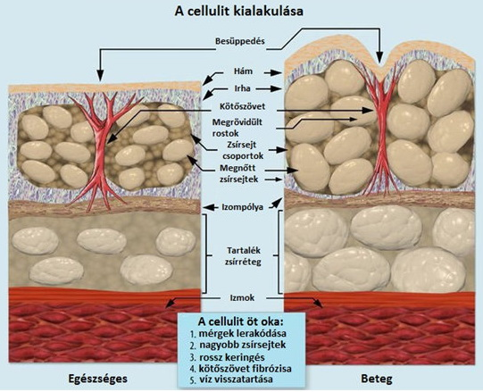
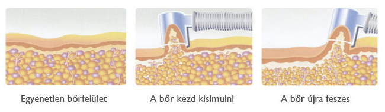

VÁKUUMOS NYIROKMASSZÁZS,
KÖPÖLYÖZÉS
Jön a nyár, a bikini szezon! A fogyáson már túl vagy, csak az a narancsliget nem tűnik el?
Mi is a narancsbőr?
Gyakori jelenség, mivel a nők 95 %-a érintett. Legyen az fiatal vagy idős, sovány vagy telt alkatú.
A narancsbőr (cellulit) legfőbb oka a vér- és nyirokkeringés funkcionális zavara. A hajszálerek falán több folyadék jut ki a sejtek közé, lassul a visszaszívódás és elszállítás, ami súlyosabb esetben akár ödémához is vezethet.
Hogyan alakul ki?
A narancsbőr kialakulásában az első helyen áll a rossz, rendszertelen táplálkozási szokás, a zsírban és kalóriában gazdag tápanyagbevitel, amelynek legnagyobb részét a vacsoránál fogyasztjuk el. Ezzel azt érjük el, hogy a felesleg ránk rakódik, amit már nehéz ledolgozni, főleg ha a megfelelő mozgásra sem fordítunk figyelmet.
Hozzájárul még a kevés vízfogyasztás, illetve a túlzott alkoholfogyasztás, dohányzás, stressz, különböző hormonkészítmények.
Főképp a comb és csípő területén jelentkezik, hiszen a szervezet zsírtartaléka itt a legnagyobb.

Mi az a köpölyözés, vagy más néven vákuumos nyirokmasszázs?
A köpölyözés vagy más néven szívómasszázs az egyik legelterjedtebb, melynek során a vákuum hatást alkalmazzák. A módszer egy nagyon régi, mér évezredek óta alkalmazott és bizonyított kezelési módszer. A műszerhez tartozó üvegharangot a bőrfelületre helyezik, ide-oda húzogatva a bőrön, kiszippantva alóla a levegőt, így a sejtek szétpattannak, a zsír, illetve a méreganyag pedig a nyirokkeringéssel együtt távozik a szervezetből.
Hatására javul a vérkeringés és nyirokáramlás és megélénkül az anyagcsere, javul a narancsbőr, méregtelenítő és térfogatnövelő hatású.
A zsírsejtekben felfokozódik az égés, aminek következtében a bőr felmelegszik (bepirosodik), így csökkennek a zsírpárnák. A köpölyözés a laza kötőszöveteket megerősíti, rugalmasságukat visszaállítja.
